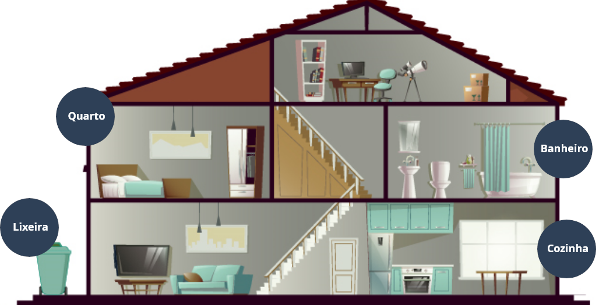

Atenção em casos suspeitos ou confirmados
Casos suspeitos e confirmados de Covid-19 devem seguir protocolo de isolamento social rígido. Isso nem sempre é fácil.
Você conhece alguém que passou por essa situação? Sabe como essa pessoa se sentiu? E você, como se sentiria? Como gostaria que cuidassem de você?

Anote esses pensamentos, confira os objetivos de
aprendizagem dessa aula e vamos começar!
Objetivos de aprendizagem:
-
Reconhecer os sinais e sintomas da Covid-19.
-
Realizar os cuidados domiciliares específicos no caso de isolamento domiciliar.
-
Realizar as ações para o caso de convivência com pessoas com suspeita ou com confirmação de Covid-19.
-
Realizar o monitoramento domiciliar da saúde de uma pessoa com Covid-19.
-
Compreender que é importante a comunicação com a pessoa idosa que está em isolamento.
Identificando casos suspeitos de Covid-19
Já se sabe que a Covid-19 pode ser apresentada de formas muito variadas, de uma dor de cabeça a uma dor de garganta, de uma confusão mental a uma diarreia, de uma falta de ânimo a dores nas pernas, febre, tosse, falta de ar. Portanto, é importante estar atento e no aparecimento de um dos sintomas, deverá procurar o serviço de saúde mais próximo de sua casa.
Todos os casos de sintomas de gripe, que também são sintomas relacionados à Covid-19, estão sendo considerados casos suspeitos da doença.
Como a Covid-19 é uma doença que evolui de forma muito rápida e agressiva, é muito importante a orientação rápida do profissional de saúde, antes que haja possíveis complicações.
Particularidade dos sintomas em pessoas idosas
Muito importante ficar atento a sintomas que poderão ser considerados da Covid-19 nas pessoas idosas. Um fator que dificulta a percepção precoce desses sinais e sintomas é a confusão com um simples resfriado, o que pode induzir as pessoas a não entrarem em contato com o serviço de saúde no tempo adequado.
A infecção por Covid-19 não é um resfriado comum, principalmente em pessoas idosas que podem apresentar as formas mais graves da doença.
Pessoas mais novas que convivam com pessoa idosa deverão ter mais atenção, pois têm mais chance de não apresentarem sintomas estando contaminadas, e dessa forma a pessoa idosa terá um risco maior de ser contaminada.
A prevenção e o cuidado de todas as pessoas que convivem com idoso significa proteção aos mais vulneráveis.
Reconheça os principais sinais e sintomas da Covid-19
Os sintomas mais comuns relacionados a Covid-19 são:
-
Febre (temperatura acima de 37,8°C).
-
Dor de cabeça.
-
Dores no corpo.
-
Cansaço.
-
Tosse seca (sem catarro).
-
Dor de garganta.
-
Perda do paladar (gosto) e do olfato (cheiro).
Particularidade dos sintomas das pessoas idosas
Pessoas idosas podem não apresentar os sintomas leves, mais típicos da Covid-19. Fique alerta se identificar algum desses sintomas:
-
Apatia.
-
Falta de vontade de realizar suas atividades cotidianas.
-
Perda do apetite.
-
Cansaço.
-
Confusão mental.
Os sintomas mais graves da Covid-19 são:
-
Febre alta.
-
Dificuldade crescente de respirar.
Ao identificar esses sintomas, é recomendado procurar imediatamente o serviço de emergência ou entrar em contato com o SAMU (192). Isso é fundamental, pois o tratamento adequado na unidade de saúde pode salvar a vida do doente.
Ao identificar esses sintomas, é recomendado procurar imediatamente o serviço de emergência ou entrar em contato com o SAMU (192). Isso é fundamental, pois o tratamento adequado na unidade de saúde pode salvar a vida do doente.
Em caso de qualquer ocorrência, ligue para o SAMU – 192
Diagnóstico da Covid-19
O diagnóstico da Covid-19 é feito por um profissional da saúde por meio da avaliação dos sintomas e do histórico de contatos da pessoa. Uma pessoa é classificada como caso confirmado somente depois de constatado que se trata da infecção pelo novo coronavírus. A constatação é feita com a realização de um teste com as secreções respiratórias (exame do “cotonete”) ou exame de sangue.
Casos leves
Na maioria das vezes as pessoas não precisam de hospitalização, dessa forma o cuidado em casa deverá ser redobrado. Se o idoso conviver ou cuidar de alguma pessoa ou familiar que apresenta sintomas, ou um caso confirmado de Covid-19, é necessário que todos os cuidados e medidas de higiene e prevenção sejam seguidos de forma rigorosa.
Os casos confirmados e com sintomas leves de Covid-19, que não precisam de hospitalização, deverão ser notificados ao serviço de saúde e monitorados pela equipe de saúde da família.
Cuidados domiciliares para casos suspeitos ou confirmados
As pessoas com suspeita ou diagnóstico confirmado de Covid-19, com um quadro leve da doença, não necessitam de internação hospitalar. A medida mais imediata, além do isolamento domiciliar, é proporcionar um ambiente tranquilo e tomar as devidas precauções para que não ocorram transmissões para a pessoa idosa.
A pessoa com suspeita ou Covid-19 confirmada deve permanecer em isolamento domiciliar por 14 dias a partir do início dos sintomas e/ou do resultado positivo da testagem. Isso evita a disseminação do vírus. Todos que tiveram contato com esta pessoa no domicílio deverão ser testados, ficar em isolamento e atentos aos seus próprios sintomas, pois há possibilidade de também terem sido contaminados.
Toque nas lupas e veja outros cuidados que devem ser seguidos:
Ações a serem tomadas para convivência com suspeitos ou confirmados para Covid-19
-
Todas as pessoas da casa devem lavar as mãos com água e sabão por diversas vezes durante o dia, especialmente antes de comer, cozinhar e após ir ao banheiro.
-
Higienize as mãos imediatamente após o contato com secreções (saliva, suor e catarro) e com áreas tocadas, como cama, mesinha de cabeceira, cadeira, etc.
-
É recomendável o uso do papel toalha para secar as mãos. Caso isso não seja possível, a toalha de tecido precisa ser de uso exclusivo da pessoa contaminada e deve ser trocada sempre que estiver úmida.
-
As refeições devem ser feitas em horários diferentes do restante da família - ou em ambiente separado.
-
Mantenha as rotinas de medicação da pessoa idosa, observando os horários e as dosagens indicadas pelo médico.
-
No caso de consultas programadas, com antecedência, elas devem ser confirmadas antes de se deslocar.
-
Se no seu território tiver equipe de saúde da família, você pode confirmar as visitas e tirar as dúvidas que surgirem.

UMA DAS MANEIRAS DE MANTER ESTAS ROTINAS DE MEDICAÇÃO DA PESSOA IDOSA DEVIDAMENTE REGISTRADAS É UTILIZAR A CADERNETA DE SAÚDE DA PESSOA IDOSA.
Em todos os casos em que uma pessoa é acompanhada ou cuidada em casa, deve haver um esforço por parte de quem cuida em explicar cada medida adotada, para que a pessoa cuidada tenha consciência da importância em cooperar e fazer parte ativa de todo o processo de prevenção e cuidado. Mesmo com limitações, na maioria das vezes ela pode compreender e, inclusive, colaborar com os cuidados.
Entretanto, existem agravos e doenças que podem deixar a pessoa mais agitada ou mesmo com atitudes agressivas com os familiares e/ou com o(a) cuidador(a).
Se a mudança de comportamento for inesperada e/ou súbita, busque orientação de um profissional de saúde, pois pode ser um sinal de infecção. Nestas situações tão difíceis de lidar, manter a calma e evitar confronto direto é fundamental.
Se você estiver cuidando de uma pessoa que apresenta grau moderado ou grave de incapacidade ou alguma deficiência (mental ou física), independente da idade, fique atento aos sinais e sintomas da Covid-19. Estas pessoas fazem parte do grupo populacional com maior risco de desenvolver as formas mais graves da doença.
Monitoramento domiciliar da saúde de uma pessoa com Covid-19
Quando uma pessoa infectada puder ficar em casa, é muito importante acompanhar alguns sinais e sintomas que possam indicar o agravamento da doença. Confira:
-
A temperatura corpórea deve ser medida pelo menos entre 4 a 5 vezes por dia. Registre todas as medições num caderno ou bloco. O aumento da temperatura pode ser um indicador de complicação da infecção.
-
Caso a pessoa idosa urine com menor frequência, fique atento, pois pode ser sinal de desidratação.
-
Atenção à ingestão de líquidos. As pessoas idosas não sentem tanta sede, mas desidratam muito rapidamente. Deixe líquidos sempre à disposição e ofereça um copo com água ou suco, regularmente, a fim de garantir uma boa hidratação.
-
O mesmo deve ser feito com as evacuações, atenção para manifestações diarreicas ou se há constipação.
-
A ocorrência recorrente de vômitos é um sinal de alerta.
-
Se houver algum desconforto respiratório, procure urgente o serviço de saúde.
Você sabe qual é a temperatura corporal normal? E quando é que um adulto tem febre?
A temperatura corporal normal situa-se entre os 36 ºC e os 37ºC, mas pode variar de acordo com alguns fatores como:
-
A idade.
-
A atividade desempenhada.
-
A hora do dia.
-
A parte do corpo em que está sendo avaliada a temperatura.
De uma forma simples, pode-se considerar febre quando a aferição com termômetro for superior a 37, 5ºC.
Não existem medicamentos para prevenir a Covid-19. Quando uma pessoa apresenta a infecção na forma leve, os únicos medicamentos recomendados são para aliviar a febre ou o desconforto físico (dores musculares). Não use ou administre remédios por conta própria, pois eles podem trazer complicações. Siga a orientação de um profissional de saúde.
Casos de hospitalização por Covid-19
Sempre que possível, a pessoa hospitalizada deve estar em contato com os familiares. Como as visitas em caso de Covid-19 são restritas, lembre-se de deixar um telefone celular com a pessoa que vai ficar internada.
É importante manter contato com a pessoa internada, seja por vídeo, áudio ou mesmo ligações. Esse contato diminuiu ou previne sentimentos de abandono e/ou solidão.
Os profissionais são muito importantes nos casos de internação, pois o vínculo criado com eles pode ser um aliado na diminuição da sensação de solidão.
No caso de internação em UTI, onde o telefone não é permitido, recomenda-se que os familiares mantenham contato por meio dos profissionais de saúde que estão responsáveis pelos cuidados.
Chegamos ao fim da aula!
Nessa aula, você aprendeu a reconhecer os sinais e sintomas da Covid-19; quais os cuidados domiciliares específicos no caso de isolamento domiciliar, as ações para o caso de convivência com pessoas suspeitas ou com confirmação de Covid-19 e sobre o monitoramento domiciliar da saúde de uma pessoa com Covid-19. Viu também sobre a importância da comunicação efetiva com a pessoa idosa em isolamento.
Antes de seguir em frente, recupere suas anotações do início
da aula e reflita sobre como você pode seguir os protocolos de isolamento e manter a pessoa
idosa acolhida, nesse momento de maior fragilidade.
Depois dessa reflexão, siga em frente!